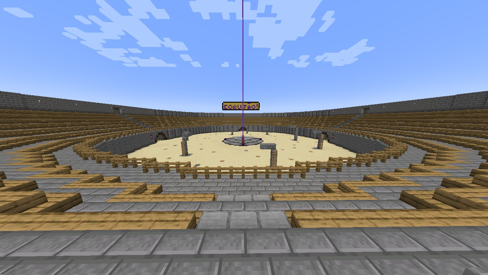
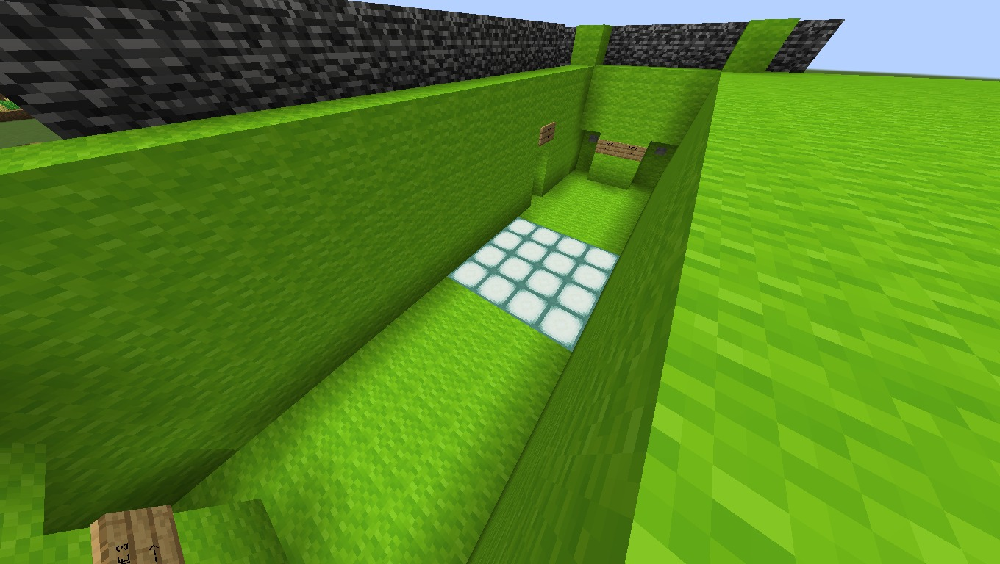
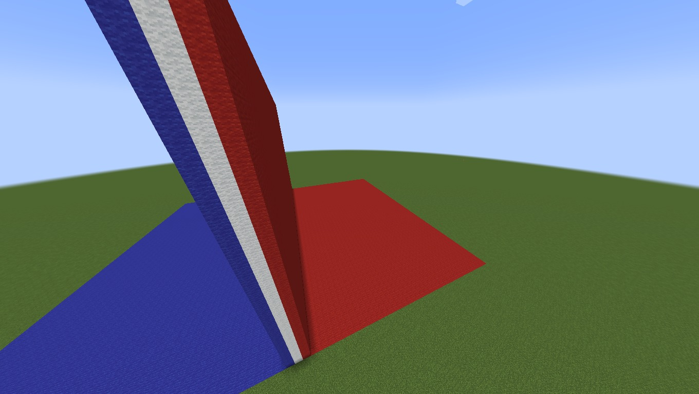
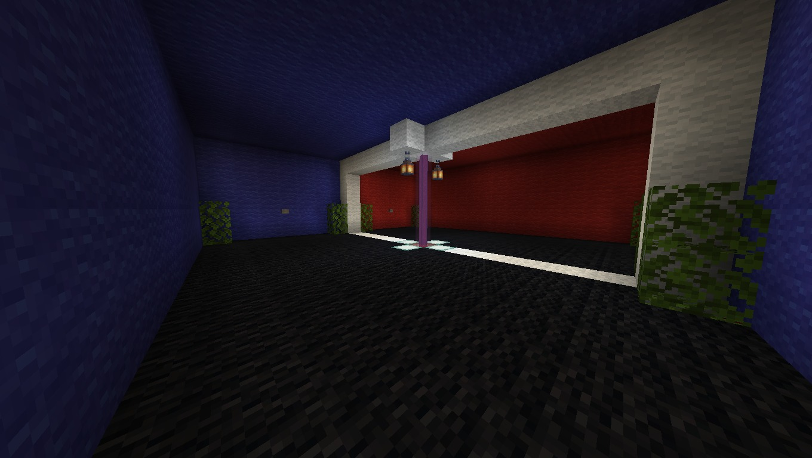

Mapa
Teremos 3 estilos de jogos diferentes: Arena, Build Battle e Parkour
Arena:
Arena é um modo PvP de 4 pessoas num campo de batalha circular, a escolha de armamento pode variar de pessoa para pessoa, como espadas, machados, clavas, arcos e etc.


Build Battle:
Build Battle é um modo onde quem construir uma construção de tema específico e receber mais votos positivos de todos os jogadores vence.


Parkour:
Parkour é um modo onde jogadores fazem pulos e manobras perigosas para ir de um ponto para o outro com o objetivo de completar o trajeto da maneira mais rápida que os outros jogadores.